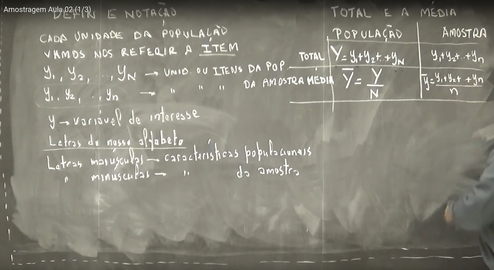
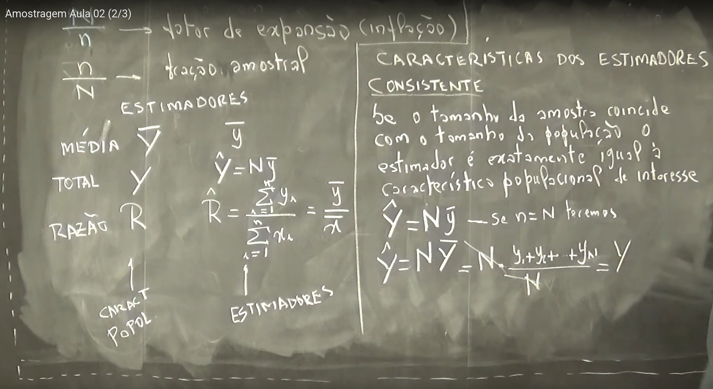
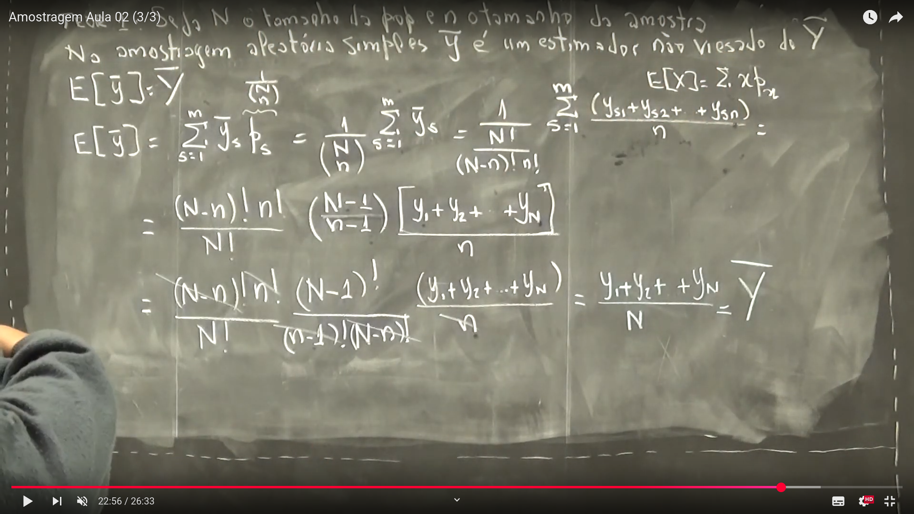

Semana 2
Semana 2
Aula 01 – Definições e Notações em Amostragem
Definições e Notações em Amostragem
Em amostragem, cada unidade da população é chamada de item. Utilizamos diferentes notações para representar dados populacionais e amostrais.
Notações
- \(y_1, y_2, \dots, y_N\): valores da variável de interesse para os \(N\) itens da população
- \(y_1, y_2, \dots, y_n\): valores da variável de interesse para os \(n\) itens da amostra
- \(y\): variável de interesse
Convenção de letras
- Letras maiúsculas representam parâmetros populacionais
(ex: \(Y\), \(N\), \(\bar{Y}\)) - Letras minúsculas representam estatísticas amostrais
(ex: \(y\), \(n\), \(\bar{y}\))
Total e Média
A seguir, temos as expressões para o total e a média, tanto para a população quanto para a amostra:
| População | Amostra |
|---|---|
| \[ Y = y_1 + y_2 + \dots + y_N \] | \[ y_1 + y_2 + \dots + y_n \] |
| \[ \bar{Y} = \frac{Y}{N} \] | \[ \bar{y} = \frac{y_1 + y_2 + \dots + y_n}{n} \] |
Esses conceitos são fundamentais, pois estimativas amostrais (como \(\bar{y}\)) são utilizadas para inferir parâmetros populacionais (como \(\bar{Y}\)).
Quadro da aula: 
Aula 02 - Estimadores em Pesquisas com Interesse do Pesquisador
Nesta aula, abordamos diferentes formas de quantificar características populacionais a partir de amostras. Os principais parâmetros de interesse são média, total, razão e proporção.
Exemplos de Parâmetros Populacionais
Média (\(\bar{Y}\))
Exemplo: número médio de crianças por sala de aula.
\[ \bar{Y} = \frac{1}{N} \sum_{i=1}^{N} Y_i \]Total (\(Y\))
Exemplo: total de frutos em uma plantação com \(N\) árvores.
\[ Y = \sum_{i=1}^{N} y_i \]Razão (\(R\))
Exemplo: razão entre renda total e número de pessoas por residência.
\[ R = \frac{Y}{X} \] Onde:- \(Y\): variável de interesse (ex: renda total)
- \(X\): variável auxiliar (ex: total de pessoas)
- \(Y\): variável de interesse (ex: renda total)
Proporção (\(P\))
Exemplo: proporção de alunos da UFPR trabalhando com carteira assinada.
Estimadores Amostrais
Os parâmetros populacionais são estimados com base em amostras:
| Parâmetro Populacional | Estimador Amostral |
|---|---|
| \(\bar{Y}\) (média) | \(\bar{y} = \frac{1}{n} \sum_{i=1}^{n} y_i\) |
| \(Y\) (total) | \(\hat{Y} = N \bar{y}\) |
| \(R = \frac{Y}{X}\) | \(\hat{R} = \frac{\sum_{i=1}^{n} y_i}{\sum_{i=1}^{n} x_i} = \frac{\bar{y}}{\bar{x}}\) |
| \(P\) (proporção) | \(p = \frac{\text{número de sucessos na amostra}}{n}\) |
Conceitos Importantes
- Fator de Expansão ou Inflação
Permite “expandir” a estimativa da amostra para a população, usando o tamanho populacional \(N\) e amostral \(n\).
Características do Estimador: Consistência
Um estimador é consistente se, ao aumentar o tamanho da amostra (\(n \to N\)), o estimador converge para o valor real do parâmetro populacional.
Fórmulas relevantes:
Média populacional estimada por toda a população: \[ \bar{Y} = \frac{1}{N} \sum_{i=1}^{N} y_i \]
Média amostral: \[ \bar{y} = \frac{1}{n} \sum_{i=1}^{n} y_i \]
Quando \(n = N\), então: \[ \bar{y} = \bar{Y} \]
Representação Visual da População vs Amostra
- População: \(N\) elementos
- Amostra: \(n\) elementos
- Valores amostrais: \(y_1, y_2, \ldots, y_n\)
- Valores populacionais: \(Y_1, Y_2, \ldots, Y_N\)
As estimativas amostrais \(\hat{Y}, \bar{y}, \hat{R}, p\) são aproximações das verdadeiras características da população.
Quadro da aula: 
Aula 03: Estimador Não Viesado
Conceito de Estimador Não Viesado
Seja \(N\) o tamanho da população e \(n\) o tamanho da amostra. Suponha que podemos extrair \(m\) amostras diferentes de tamanho \(n\) dessa população. Para cada amostra, calculamos um estimador \(\hat{T}_s\). Se a média desses estimadores, ao longo das \(m\) amostras possíveis, for igual à característica populacional real \(T\), então dizemos que \(\hat{T}\) é um estimador não viesado de \(T\).
\[ \frac{1}{m} \sum_{s=1}^{m} \hat{T}_s = \bar{\hat{T}} = T \]
Ou seja:
\(\hat{T}\) é não viesado se, em média, fornece o valor verdadeiro do parâmetro da população.
Representação Gráfica (resumo da imagem):
- \(T\): parâmetro populacional verdadeiro.
- Cada \(\hat{T}_s\) representa o valor estimado a partir da \(s\)-ésima amostra.
- A média de todos os \(\hat{T}_s\) é igual a \(T\).
Teorema 1: A Média Amostral é um Estimador Não Viesado da Média Populacional
Enunciado:
Seja \(N\) o tamanho da população e \(n\) o tamanho da amostra. Na amostragem aleatória simples (AAS), a média amostral \(\bar{y}\) é um estimador não viesado da média populacional \(\bar{Y}\).
\[ E[\bar{y}] = \bar{Y} \]
Demonstração do Teorema 1
Queremos mostrar que:
\[ E[\bar{y}] = \frac{1}{m} \sum_{s=1}^{m} \bar{y}_s = \bar{Y} \]
Onde: - \(m = \binom{N}{n}\) é o número de amostras possíveis de tamanho \(n\). - Cada \(\bar{y}_s\) é a média da \(s\)-ésima amostra. - Cada amostra tem probabilidade igual \(p_s = \frac{1}{m}\) de ser selecionada.
Passos da demonstração:
- Definimos a esperança:
\[ E[\bar{y}] = \sum_{s=1}^{m} \bar{y}_s \cdot p_s \]
- Como todas as amostras têm mesma probabilidade:
\[ E[\bar{y}] = \frac{1}{m} \sum_{s=1}^{m} \bar{y}_s \]
- Expandindo uma média amostral genérica:
\[ \bar{y}_s = \frac{y_{s1} + y_{s2} + \dots + y_{sn}}{n} \]
- Somando todas as médias amostrais possíveis e considerando a simetria das combinações (todos os \(y_i\) da população aparecem igualmente ao longo das amostras), obtemos:
\[ E[\bar{y}] = \frac{y_1 + y_2 + \dots + y_N}{N} = \bar{Y} \]
Conclusão
Portanto, a média amostral \(\bar{y}\) é um estimador não viesado da média populacional \(\bar{Y}\), ou seja:
\[ E[\bar{y}] = \bar{Y} \]
Isso garante que o uso da média amostral, em contextos de amostragem aleatória simples, não introduz viés sistemático nas estimativas da média populacional.
Exemplo: Aplicação do Teorema 1
Vamos considerar uma população pequena com \(N = 4\) elementos:
\[ \text{População: } Y = \{2, 4, 6, 8\} \]
A média populacional é:
\[ \bar{Y} = \frac{2 + 4 + 6 + 8}{4} = \frac{20}{4} = 5 \]
Agora, vamos considerar todas as amostras possíveis de tamanho \(n = 2\), sem reposição (amostragem aleatória simples).
Passo 1: Listar todas as combinações possíveis
As combinações de 2 elementos entre 4 são:
- Amostra 1: \(\{2, 4\}\) → \(\bar{y}_1 = \frac{2 + 4}{2} = 3\)
- Amostra 2: \(\{2, 6\}\) → \(\bar{y}_2 = \frac{2 + 6}{2} = 4\)
- Amostra 3: \(\{2, 8\}\) → \(\bar{y}_3 = \frac{2 + 8}{2} = 5\)
- Amostra 4: \(\{4, 6\}\) → \(\bar{y}_4 = \frac{4 + 6}{2} = 5\)
- Amostra 5: \(\{4, 8\}\) → \(\bar{y}_5 = \frac{4 + 8}{2} = 6\)
- Amostra 6: \(\{6, 8\}\) → \(\bar{y}_6 = \frac{6 + 8}{2} = 7\)
Passo 2: Calcular a média das médias amostrais
Como todas as amostras têm a mesma probabilidade, basta fazer a média simples:
\[ E[\bar{y}] = \frac{3 + 4 + 5 + 5 + 6 + 7}{6} = \frac{30}{6} = 5 \]
Conclusão
A esperança matemática da média amostral é igual à média populacional:
\[ E[\bar{y}] = \bar{Y} = 5 \]
Portanto, o teorema é confirmado: \(\bar{y}\) é um estimador não viesado de \(\bar{Y}\).
Quadro da aula: 